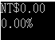

講白了就是說，「值」可以用何種樣式來表現出來。
一、ToString方法
每個衍生自 System.Object 的類型都會自動繼承無參數的 ToString 方法，
這個方法預設會傳回類型的名稱(包含命名空間，如果有的話)。
using System;
namespace ConsoleApplication1
{
class Program
{
static void Main(string[] args)
{
Automobile firstAuto = new Automobile();
Console.WriteLine(firstAuto.ToString());
Console.ReadKey();
}
}
public class Automobile
{
// No implementation. All members are inherited from Object.
}
}
額外一提的是
Console.WriteLine(firstAuto);
WriteLine方法也隱含著傳回類型的名稱
// Writes the text representation of an object followed by a line
// terminator to the text stream.
//
public virtual void WriteLine(Object value) {
if (value==null) {
WriteLine();
}
else {
// Call WriteLine(value.ToString), not Write(Object), WriteLine().
// This makes calls to WriteLine(Object) atomic.
IFormattable f = value as IFormattable;
if (f != null)
WriteLine(f.ToString(null, FormatProvider));
else
WriteLine(value.ToString());
}
}
而物件的ToString方法內部為
public class Object
{
// Returns a String which represents the object instance. The default
// for an object is to return the fully qualified name of the class.
//
public virtual String ToString()
{
return GetType().ToString();
}
}
二、利用ToString方法來解說「值」如何以何種樣式來表現出來。
(1)、以數值int型別作為例子，我們想要將數值「零」個別用貨幣、百比來表示
using System;
namespace ConsoleApplication1
{
class Program
{
static void Main(string[] args)
{
int a = 0;
Console.WriteLine(a.ToString("C"));
Console.WriteLine(a.ToString("P"));
Console.ReadKey();
}
}
}
結果為

為何用代號"C"與"P"就可以呈現不同樣式，請參考標準數值格式字串簡述、
自訂數值格式字串簡述、標準日期和時間格式字串簡述、自訂日期和時間格式字串簡述、
我更有興趣去了解深入的實作方式，
會發現int型別的ToString有四種多載方法
public override string ToString();
public string ToString(IFormatProvider provider);
public string ToString(string format);
public string ToString(string format, IFormatProvider provider);
只列後面兩實作方法，
public String ToString(String format) {
Contract.Ensures(Contract.Result<String>() != null);
return Number.FormatInt32(m_value, format, NumberFormatInfo.CurrentInfo);
}
public String ToString(String format, IFormatProvider provider) {
Contract.Ensures(Contract.Result<String>() != null);
return Number.FormatInt32(m_value, format, NumberFormatInfo.GetInstance(provider));
}
會發現其核心是由NumberFormatInfo物件中的屬性值來決定數值的字串表現樣式，
那IFormatProvider型別跟NumberFormatInfo靜態物件是什麼關係？
你可以想像IFormatProvider就像是條件清單一樣一一列出(註一)，
然後將IFormatProvider型別的物件傳遞給NumberFormatInfo物件要他根據清單上的條件把字串指定樣式給表現出來。
註一：IFormatProvider只是個介面而已，將由CultureInfo類別會繼承IFormatProvider並實作他。
using System;
using System.Globalization;
public class Example
{
public static void Main()
{
decimal value = 1603.42m;
Console.WriteLine(value.ToString("C3", new CultureInfo("en-US")));
Console.WriteLine(value.ToString("C3", new CultureInfo("fr-FR")));
Console.WriteLine(value.ToString("C3", new CultureInfo("de-DE")));
Console.ReadKey();
}
}
(2)、以時間DateTime型別作為例子，我們想要將時間用多種樣式來表示
using System;
namespace ConsoleApplication1
{
class Program
{
static void Main(string[] args)
{
DateTime date1 = new DateTime(2016, 11, 5, 13, 30, 20);
Console.WriteLine(date1.ToString("D"));
Console.WriteLine(date1.ToString("d"));
Console.WriteLine(date1.ToString("F"));
Console.WriteLine(date1.ToString("f"));
Console.ReadKey();
}
}
}
執行畫面為
去了解深入的實作方式，也是一樣會發現DateTime型別的ToString有四種多載方法
public override string ToString();
public string ToString(IFormatProvider provider);
public string ToString(string format);
public string ToString(string format, IFormatProvider provider);
也是一樣只列後面兩實作方法，
public String ToString(String format) {
Contract.Ensures(Contract.Result<String>() != null);
return DateTimeFormat.Format(this, format, DateTimeFormatInfo.CurrentInfo);
}
public String ToString(String format, IFormatProvider provider) {
Contract.Ensures(Contract.Result<String>() != null);
return DateTimeFormat.Format(this, format, DateTimeFormatInfo.GetInstance(provider));
}
我們會發現時間型別的ToString實作方法跟數值型別的ToString實作方法有一些出入，
其實作方法差別在一個核心是由DateTimeFormatInfo物件中的屬性值來決定時間的字串表現樣式，
另一個核心是由NumberFormatInfo物件中的屬性值來決定數值的字串表現樣式。
參考資料：